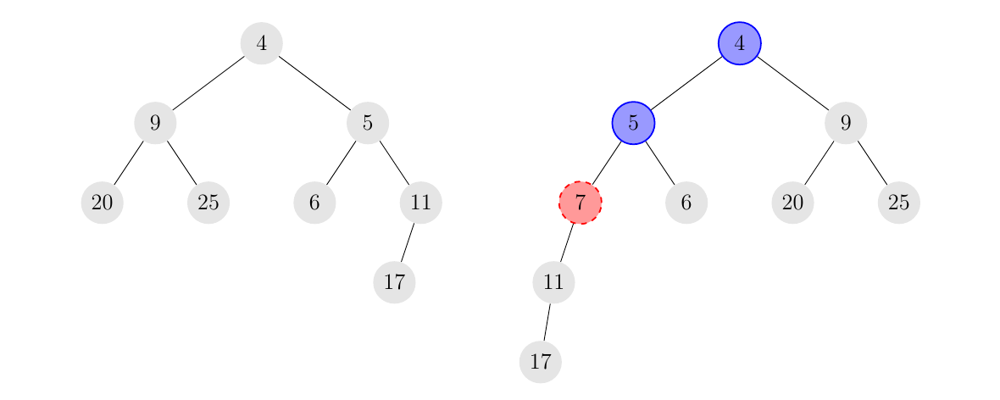

49th ICPC World Championship · Problem A
The following is based on a true story – the names have been changed because. . . well, because you always change names in stories like this one.
Professor Taylor Swift is grading a homework assignment on integer skew heaps. A skew heap is a binary tree with an integer stored in each node such that the value in any node is less than or equal to the values in any of its children. Note that the skew heap need not be a perfect binary tree; that is, the left and/or right subtree of any node may be empty.
Inserting a value x into a skew heap H is done using the following recursive procedure:

Now, back to Professor Swift. The homework problem she has assigned asks the students to show the heap that results from inserting a given permutation of the numbers from 1 to n, in the given order, into an empty heap. Surprisingly, some of the students have wrong answers! That got Professor Swift wondering: For a given heap, is there an input permutation that would have produced this heap? And if so, what are the lexicographically minimal and maximal such input permutations?
The first line of input contains an integer n (1 ≤ n ≤ 2·105), the number of nodes in the tree. These nodes contain the numbers from 1 to n exactly. This is followed by n lines, the ith of which contains two integers ℓi and ri (i < ℓi ≤ n or ℓi = 0; i < ri ≤ n or ri = 0), describing the values of the left and right children of the node storing i, where a value of 0 is used to indicate that the corresponding child does not exist. It is guaranteed that this data describes a binary tree.
Output the lexicographically minimal input permutation that produces the given tree under the insertion method for skew heaps, followed by the lexicographically maximal such input permutation. These permutations may coincide, in which case you still need to output both. If no input permutation producing the given tree exists, output impossible.
7 2 3 4 5 6 7 0 0 0 0 0 0 0 0
1 3 2 7 5 6 4 7 1 5 3 2 6 4
2 0 2 0 0
impossible
3 2 0 3 0 0 0
2 3 1 3 2 1